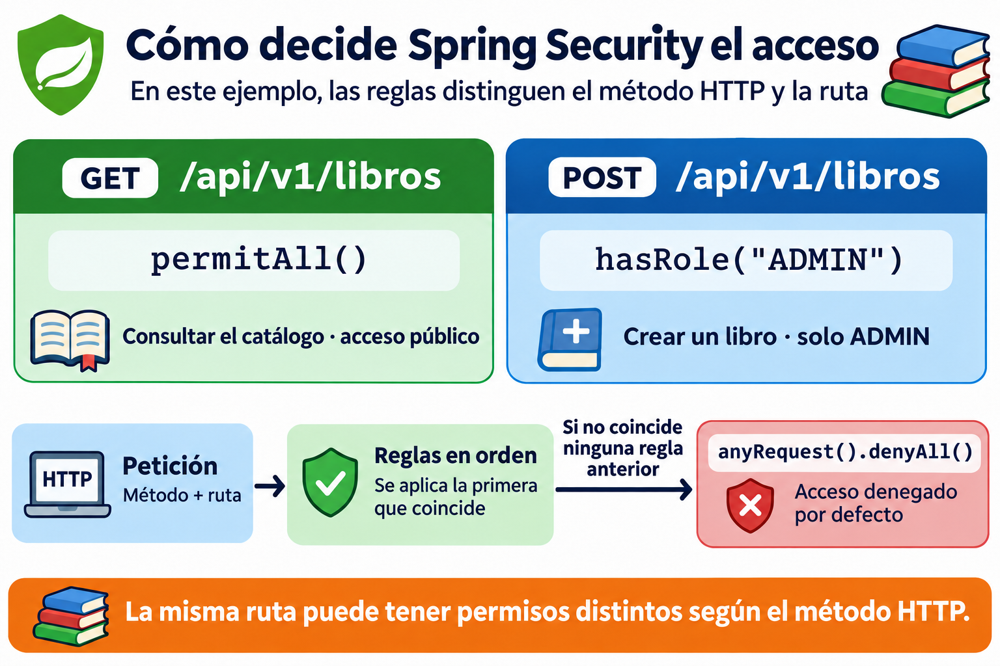
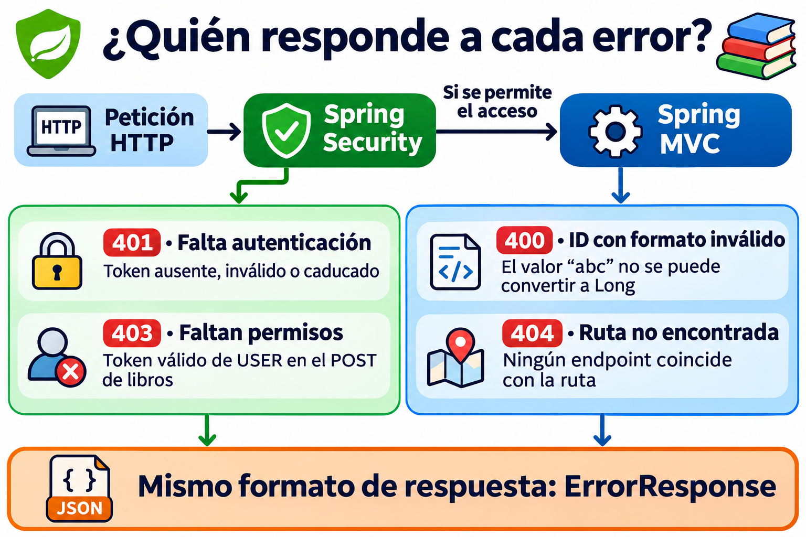
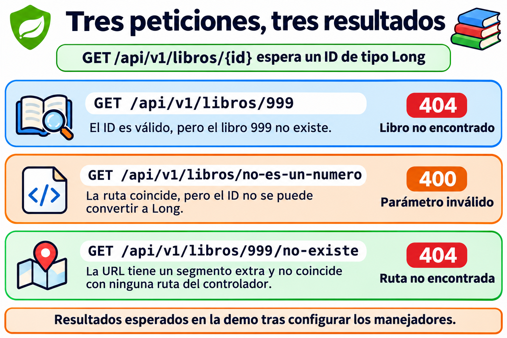

🧩 5. Roles y rutas protegidas¶
Descarga de diapositivas
En la sesión de JWT probaste a crear un libro con el token de una cuenta USER. La API devolvió 403 porque identificó al usuario, pero crear libros exige ADMIN. En esta sesión vas a extender esa decisión al resto de rutas de Librería y a reconocer en qué punto se produce cada error para devolverlo con el formato ErrorResponse.
🗺️ La política de autorización, leída como tabla¶
El bloque authorizeHttpRequests de SecurityConfig recoge las reglas de acceso. En Librería, el catálogo es público y el equipo que lo gestiona tiene el rol ADMIN. La tabla permite revisar cada permiso antes de escribir el código.
| Ruta o patrón | Método | Acceso |
|---|---|---|
/api/v1/auth/register, /api/v1/auth/login |
POST |
Público |
/api/v1/auth/me |
GET |
Cualquier usuario autenticado |
/api/v1/libros, /api/v1/libros/**, /api/v1/editoriales, /api/v1/editoriales/** |
GET |
Público |
/api/v1/libros, /api/v1/editoriales |
POST |
ADMIN |
/api/v1/libros/*, /api/v1/editoriales/* |
PUT, DELETE |
ADMIN |
/documentacion, /swagger-ui.html, /swagger-ui/**, /v3/api-docs/** |
Cualquiera | Público |
| Cualquier petición que no coincida con las reglas anteriores | Cualquiera | Denegado |

Figura 1. Evaluación de las reglas de acceso según el método HTTP y la ruta. Elaboración propia.
Sobre la configuración JWT de la sesión anterior, sustituye el bloque authorizeHttpRequests. Importa jakarta.servlet.DispatcherType para permitir el despacho interno de errores.
Spring Security también comprueba el acceso cuando el servidor vuelve a tramitar una petición para presentar un error. La primera regla permite ese despacho interno de tipo ERROR, que Spring Boot puede dirigir a /error. Una petición HTTP directa a /error sigue sujeta a las reglas de rutas. Consulta la documentación de autorización de Spring Security.
Revisa las rutas al activar denyAll()
/api/v1/auth/me necesita la regla authenticated() que antes aportaba la regla final. Si añades POST /api/v1/libros/5/aplicar-descuento, recuerda que la regla del POST a /api/v1/libros cubre únicamente la ruta de colección.
El permiso depende de la operación y del recurso
En Librería, borrar un libro es tarea de ADMIN. En una red social, un USER podría borrar su propia publicación si el servicio comprueba además que es su autor. Al diseñar la política, piensa quién puede realizar la operación y sobre qué recurso.
🚦 Dónde se produce cada error¶
Cuando una solicitud falla, averigua hasta dónde ha llegado. Un rechazo en los filtros de Spring Security ocurre antes de que Spring MVC pueda seleccionar un controlador. Dentro de MVC, la petición también puede fallar al resolver la ruta, al convertir un parámetro o al ejecutar la búsqueda del libro.

Figura 2. Origen de los errores HTTP en Spring Security y Spring MVC en la API de Librería. Elaboración propia.
La regla denyAll() puede acabar en 401 o en 403
En esta configuración, si una petición anónima llega a denyAll(), Spring Security activa el AuthenticationEntryPoint y devuelve 401. Si llega con una autenticación válida, activa el AccessDeniedHandler y devuelve 403. En ambos casos el acceso queda denegado.
🔎 Resolver los errores de rutas e identificadores en Spring MVC¶
Prueba las tres peticiones de la figura con No Auth en Postman o sin cabecera Authorization. Las admite la regla pública de GET /api/v1/libros/**. Usa un ID que no exista en tus datos para la primera petición. En la demo, la búsqueda de ese libro ya produce 404 mediante la ResponseStatusException que maneja GlobalExceptionHandler.

Figura 3. Respuestas de la API de Librería ante un libro inexistente, un ID inválido y una ruta inexistente. Elaboración propia.
Si en las otras dos peticiones aparece 500, comprueba si las está capturando el @ExceptionHandler(Exception.class) del primer apartado. Añade los siguientes métodos al mismo GlobalExceptionHandler. Para cada una de estas excepciones, Spring MVC selecciona el método específico del mismo @RestControllerAdvice.
1. ID con formato inválido¶
La ruta con no-es-un-numero encaja en /api/v1/libros/{id}. MVC intenta convertir ese segmento a Long antes de ejecutar el método del controlador y lanza MethodArgumentTypeMismatchException si la conversión falla. Usa getName() y getValue() para identificar el parámetro y el valor en el mensaje.
2. Ruta sin controlador¶
En la demo, /api/v1/libros/999/no-existe queda fuera de los patrones del controlador y llega al manejador de recursos estáticos de MVC. Si este no encuentra un recurso, lanza NoResourceFoundException. Devuelve 404 con el cuerpo habitual de la API. Consulta la referencia de NoResourceFoundException.
🛡️ Devolver el 403 con AccessDeniedHandler¶
Al intentar crear un libro con el token de USER, el rechazo ocurre en Spring Security. Para darle el formato ErrorResponse, registra un AccessDeniedHandler en la cadena de seguridad. GlobalExceptionHandler se encarga de los errores que se resuelven dentro de MVC.
Si ya tienes ErrorResponseAccessDeniedHandler de la demo, reutilízalo. Esta es la implementación de referencia.
Añade ErrorResponseAccessDeniedHandler accessDeniedHandler a los parámetros del bean securityFilterChain y regístralo en .exceptionHandling(...). bearerEntryPoint es el punto de entrada de la sesión de JWT. Conserva también su registro en oauth2ResourceServer(...) para los errores de validación del token.
| Java | |
|---|---|
Comprueba el mismo POST /api/v1/libros con un cuerpo válido. Sin token debe devolver 401. Con un JWT válido de USER debe devolver 403. En ambos, revisa el estado HTTP, el campo status del JSON y el path de la petición original. Con un JWT de ADMIN, la petición pasa la autorización y MVC puede tramitar el alta.
📝 Documentar la política de acceso¶
Una tabla con método, ruta y permiso permite comprobar los cambios de seguridad sin leer toda la configuración Java. Al añadir un endpoint, actualiza su regla y su fila en docs/seguridad.md. En la actividad 2.5 aplicarás este criterio a las rutas de tu propio proyecto.